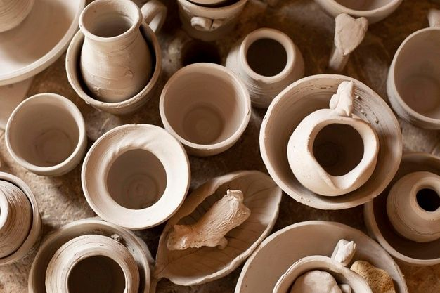
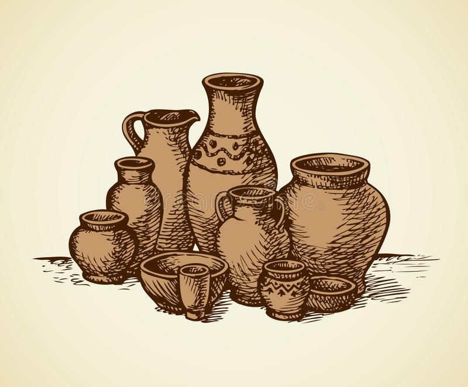

Maravillas
Angelina Rous
Gutierrez Herrera
La arcilla es mucho más que un material; es una forma de expresar nuestra creatividad, imaginación y pasión por el arte. A través de nuestras manos, transformamos pequeños trozos de arcilla en creaciones únicas, llenas de color, personalidad y encanto. Cada pieza comienza con una idea que poco a poco va tomando forma, desde el primer moldeado hasta los últimos detalles, convirtiéndose en una pequeña obra hecha con dedicación, paciencia y amor. En este espacio queremos compartir contigo la belleza del trabajo artesanal, descubrir nuevas formas de crear y demostrar que con un poco de imaginación podemos convertir algo sencillo en algo extraordinario. Nos inspira la posibilidad de crear piezas originales que transmitan emociones, cuenten historias y reflejen la esencia de quien las elabora. Además, creemos que trabajar con arcilla es una experiencia que nos permite relajarnos, experimentar y disfrutar del proceso creativo, sin miedo a equivocarnos y siempre buscando nuevas ideas. Te invitamos a conocer nuestras creaciones, explorar este maravilloso mundo artesanal y dejar volar tu imaginación con nosotros. Porque cada pieza es diferente, cada detalle tiene un significado y cada creación lleva consigo una parte de nuestra esencia

Existen diferentes tipos de arcilla que se utilizan según las necesidades y el resultado que se desea obtener en cada proyecto artístico. Entre las más conocidas se encuentra la arcilla natural o cerámica, utilizada para elaborar vasijas, platos, esculturas y objetos decorativos que generalmente necesitan cocción en un horno especial para adquirir resistencia. También está la arcilla de secado al aire, muy popular para realizar manualidades en casa, ya que se endurece sin necesidad de utilizar un horno cerámico. Por otro lado, encontramos la arcilla polimérica, un material sintético muy utilizado para crear accesorios, miniaturas, figuras y pequeños adornos con muchos detalles. Cada tipo tiene características particulares que permiten desarrollar diferentes técnicas y estilos, por lo que es importante conocer sus propiedades antes de comenzar un proyecto y seguir las indicaciones de uso correspondientes.
La arcilla es una excelente herramienta para expresar sentimientos, ideas y emociones a través del arte. Su facilidad para moldearse permite que cada persona experimente libremente y descubra nuevas maneras de representar aquello que imagina. Al trabajar con las manos, podemos crear personajes, animales, flores, accesorios, esculturas y objetos decorativos que reflejen nuestra personalidad y estilo. Cada pieza tiene un proceso diferente, desde la idea inicial hasta los pequeños detalles que le dan vida y originalidad. Además, el trabajo con arcilla nos enseña a tener paciencia, prestar atención a los detalles y valorar el esfuerzo que requiere elaborar algo artesanalmente. No es necesario ser un artista profesional para comenzar, porque lo más importante es disfrutar del proceso, aprender nuevas técnicas y dejar que la creatividad sea la protagonista de cada creación.
Realizar actividades con arcilla ofrece diversos beneficios para el desarrollo de nuestras habilidades creativas y manuales. Moldear, estirar, presionar y dar forma al material ayuda a mejorar la coordinación entre las manos y la vista, además de fortalecer la precisión de los movimientos. También estimula la imaginación, porque nos permite inventar figuras, combinar formas y encontrar soluciones cuando algo no resulta como esperábamos. Para muchas personas, trabajar con arcilla se convierte en una actividad relajante que favorece la concentración y permite desconectarse por un momento de las preocupaciones cotidianas. Asimismo, elaborar una pieza desde cero produce una sensación de satisfacción al observar el resultado final y reconocer el esfuerzo realizado. Por estas razones, la arcilla es un material ideal tanto para quienes desean iniciarse en el mundo de las manualidades como para quienes buscan desarrollar nuevas habilidades artísticas.
Siguenos en nuestras redes sociales: